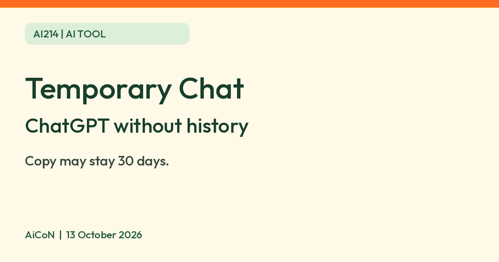

ChatGPT Temporary chat: no history and no training, but a copy can stay for 30 days
OpenAI says a temporary chat stays out of your ChatGPT history and is not used to improve its models, but a copy may be kept for up to 30 days for safety.

What it is
Temporary chat is a ChatGPT option for a conversation that stays out of your chat history. OpenAI's help page says a temporary chat does not appear in your history, does not create or update memories, and is not used to improve OpenAI models while it remains temporary.
Is it free?
OpenAI says ChatGPT is free to use (ChatGPT Free Tier FAQ, and the ChatGPT home page help article). The Temporary chat help page does not list which plans have the option. OpenAI's Data controls page only says available controls depend on whether you are signed in, your plan and your workspace settings. So we cannot say outright that Temporary chat is on the Free plan. Check for the Temporary button in your own ChatGPT.
How to start one
- Open a new chat and select Temporary.
- Choose Personalized or Unpersonalized before you send the first message. Unpersonalized does not use memory, custom instructions or plugins. Personalized can use them. You cannot change this after the chat starts.
- Type your message. If you leave without saving, the chat cannot be reopened from history.
What it does not do
- OpenAI says it may keep a copy of a temporary chat for up to 30 days for safety purposes.
- OpenAI says ChatGPT may still use information from prior conversations for limited safety and security purposes, and that turning off memory does not turn off safety features.
- If you save a temporary chat, it becomes a regular chat and follows your account's personalization and model-improvement settings. Eligible files may be saved to Library when you save the chat.
- Your account and workspace restrictions come before the personalization choice, per the page.
- Temporary chat can be used with GPTs. If a GPT uses actions, data sent to third parties follows their privacy policies; they may keep it longer than 30 days or use it for other purposes.
- For eligible Enterprise customers, temporary chats are available through the Compliance API for 30 days even if the workspace has a different custom retention period.
- AiCoN advice: it is not a safe place for passwords, ID numbers or bank details. Keep those out of any AI chat.
India
OpenAI's Temporary chat page does not name countries or regions. We could not confirm India availability from an official page. Look for the Temporary button in your ChatGPT app or on the web.
Frequently asked questions
Does a temporary chat train ChatGPT?
OpenAI says a temporary chat is not used to improve its models while it stays temporary. If you save it, your model-improvement setting applies.
Is it deleted at once?
No. OpenAI says it may keep a copy for up to 30 days for safety purposes.
Can I get it back later?
Only if you save it as a regular chat before leaving, per OpenAI.
What changed since this post?
OpenAI Temporary chat, Data controls, Free Tier FAQ and home-page help checked on 13 October 2026. The supplied steps, personalization choice, saving rules and safety-copy limit remain supported. No plan list or India-specific availability statement was found on the Temporary chat page. Added the GPT-action third-party retention exception and Enterprise Compliance API access limit. No account, button, personalization, save, file, retention or privacy test performed.
Sources: OpenAI Help: Free Tier FAQ, OpenAI Help: Temporary chat in ChatGPT, OpenAI Help: Data controls in ChatGPT, OpenAI Help: The ChatGPT home page. Checked 13 October 2026.